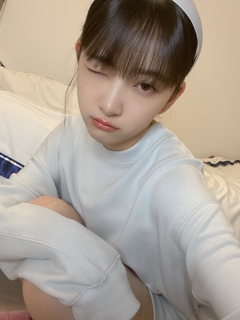
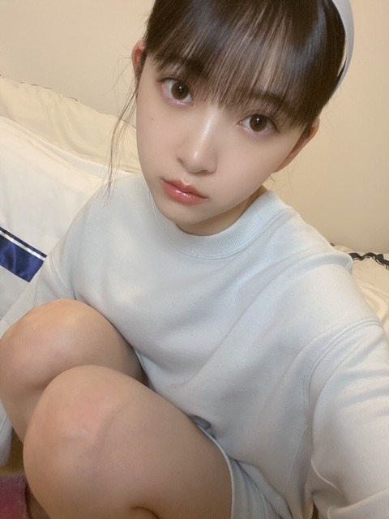

2020/0514Thu決めたらすぐの人だから @horimiona2nd
5/14(木) 乃木坂世界旅本
5/15 (金) FRIDAY 表紙
5/18(月) 週刊プレイボーイ
5/20(水)ANN生放送
5/23(土) アップトゥボーイ 表紙
5/26(火) FLASH
5/27(水) 2nd写真集！
レコメン生放送
5/23(土) アップトゥボーイ 表紙
5/26(火) FLASH
5/27(水) 2nd写真集！
レコメン生放送
6/3(水) 堀工事中DVD
盛りだくさんです☺︎
FRIDAY
週プレ
アップトゥボーイ
FLASH
2nd写真集
全部揃えたら写真集二冊分くらいに
なりそう...！
嬉しい〜
是非、おうちじかんに見てください☺︎
感想もお待ちしていますね
2nd写真集は
表紙裏・表紙だけで4パターン
ポストカードも8種類ランダム
それとは別に店舗別先着ポストカード、
セブンネットはポスター
楽天はメイキング動画
乃木坂Mobileはクリアファイル付きで
特典がたくさんです
こちらに詳細あります✨ ↓ ↓ ↓
23歳の等身大のわたしを
見ていただけると思います
ドキドキ
インタビューや質問コーナー
自己プロデュースページもあります!

なんだか最近はジブリの曲を聞いて
ボーッとする時間が多いです
あの夏へ
を聞くと泣けてくるのはなんだろう
人間の孤独に寄り添ってくれる曲な気がします
みなさんは好きなジブリの曲
ありますか？
では
2020/05/14 18:06
コメント(501)
やっぱジブリだと千と千尋の神隠しの曲がすき！ノスタルジックで寝る前によく聴いてる^_^
あの夏へ大好きです
夕方聞くと切ないですよね
私はコクリコ坂への追憶が大好きです
海ちゃんが旗を下げるときに流れる曲です
大好きです
夕方聞くと切ないですよね
私はコクリコ坂への追憶が大好きです
海ちゃんが旗を下げるときに流れる曲です
大好きです
写真集楽しみです(^^)
乃木中でやった、御輿バトル？
ムリ未央奈の可愛い顔とポーズが忘れられません。
(σ≧▽≦)σ写真集に入れて欲しかったナ
乃木中でやった、御輿バトル？
ムリ未央奈の可愛い顔とポーズが忘れられません。
(σ≧▽≦)σ写真集に入れて欲しかったナ
未央奈～☺️✨
盛りだくさんだね！
チェックします！
アップトゥボーイは予約済みです！
写真集も本当に特典も盛りだくさんで嬉しいね～☺️☺️
インタビューとか質問コーナーとかも好きだから、色々楽しみすぎる～！！
未央奈尽くしだね❤️
盛りだくさんだね！
チェックします！
アップトゥボーイは予約済みです！
写真集も本当に特典も盛りだくさんで嬉しいね～☺️☺️
インタビューとか質問コーナーとかも好きだから、色々楽しみすぎる～！！
未央奈尽くしだね❤️
ブログ更新ありがとう!!
乃木坂世界旅本絶対買う!
写真集もめっちゃ楽しみ〜!!
これからも体調に気をつけて頑張ってね!
大好き♡
乃木坂世界旅本絶対買う!
写真集もめっちゃ楽しみ〜!!
これからも体調に気をつけて頑張ってね!
大好き♡
ラピュタ一択！！ムスカ大佐最高
みおたんきゃわたん♡
風の通りみち...かな(^-^)
風の通りみち...かな(^-^)
みおなかわいすぎ！！
ブログ更新ありがとうございます！
写真集の発売もう少しだね！楽しみ♪
ジブリの曲は…魔女の宅急便だったら全部好きかなぁ〜魔女の宅急便大好きです！
体調気をつけてください！
写真集の発売もう少しだね！楽しみ♪
ジブリの曲は…魔女の宅急便だったら全部好きかなぁ〜魔女の宅急便大好きです！
体調気をつけてください！
未央奈ちゃん更新ありがとう！
ジブリの曲聞くとなんか心落ち着きますよね…
いい曲ばかりですが「いつも何度でも」と「世界の約束」が好きです。
雑誌も写真集もとても楽しみにしてます！
気温も徐々に高くなってきたのでお身体に気をつけて頑張ってください！！
ジブリの曲聞くとなんか心落ち着きますよね…
いい曲ばかりですが「いつも何度でも」と「世界の約束」が好きです。
雑誌も写真集もとても楽しみにしてます！
気温も徐々に高くなってきたのでお身体に気をつけて頑張ってください！！
未央奈ちゃんブログ更新ありがとう！
たくさん未央奈ちゃんの雑誌見れて嬉しいな〜( ¨̮ )
おうち時間にたくさん楽しめて嬉しいですありがとう
ジブリの曲はいっぱい素敵な曲ありますよね！自分は吹奏楽をやっていて吹く機会があったんですけど、テルーの唄とアシタカせっ記が好き！
吹奏楽のジブリメドレーもおすすめです！
いつもありがとう、次のブログもたのしみにしてるね
たくさん未央奈ちゃんの雑誌見れて嬉しいな〜( ¨̮ )
おうち時間にたくさん楽しめて嬉しいですありがとう
ジブリの曲はいっぱい素敵な曲ありますよね！自分は吹奏楽をやっていて吹く機会があったんですけど、テルーの唄とアシタカせっ記が好き！
吹奏楽のジブリメドレーもおすすめです！
いつもありがとう、次のブログもたのしみにしてるね
更新ありがとう
白のカチューシャ似合ってるね。
でも、運動会の白組にも見えちゃう☺️
フレー、フレー、未、央、奈ー❗
白のカチューシャ似合ってるね。
でも、運動会の白組にも見えちゃう☺️
フレー、フレー、未、央、奈ー❗
好きな曲名をド忘れしてしまったんで
検索してたら、たまたま出てきた。
タイトルの言葉、魔女の宅急便だね。
独り立ちを決意するシーン。
最近の未央奈ちゃんを見ていても
そういう風に感じてますよ。
やらずに悩むくらいなら、やってから
悩めって感じですかね。
分かってるけど、なかなか出来んなぁ。
それで検索して出てきたのが
ルージュの伝言。魔女の宅急便のやつ。
やっぱりコレだね。
歌詞というよりは曲調が好き。
あの爽やかな世界観にピッタリだと思う。
映画に思い入れがあるから尚更です。
今日はカチューシャ姿の写真ですね。
毎回ありがとう。疲れも吹っ飛びます。
そして、いよいよ未央奈ウィークが
始まるって感じがするね。
僕なりの応援はするつもりです。
でも、未央奈ウィークが終わっても
変わらず応援するんだけどね。
ではは。
検索してたら、たまたま出てきた。
タイトルの言葉、魔女の宅急便だね。
独り立ちを決意するシーン。
最近の未央奈ちゃんを見ていても
そういう風に感じてますよ。
やらずに悩むくらいなら、やってから
悩めって感じですかね。
分かってるけど、なかなか出来んなぁ。
それで検索して出てきたのが
ルージュの伝言。魔女の宅急便のやつ。
やっぱりコレだね。
歌詞というよりは曲調が好き。
あの爽やかな世界観にピッタリだと思う。
映画に思い入れがあるから尚更です。
今日はカチューシャ姿の写真ですね。
毎回ありがとう。疲れも吹っ飛びます。
そして、いよいよ未央奈ウィークが
始まるって感じがするね。
僕なりの応援はするつもりです。
でも、未央奈ウィークが終わっても
変わらず応援するんだけどね。
ではは。
可愛すぎ
ブログ更新ありがとう！
あの夏へ、すごく好きです！
千と千尋では、千尋がハクの優しさに触れてため込んだ感情を溢れさせて泣きながらおにぎりを食べるシーンがとても感動します。
1番好きです！
写真集たのしみにしています！
あの夏へ、すごく好きです！
千と千尋では、千尋がハクの優しさに触れてため込んだ感情を溢れさせて泣きながらおにぎりを食べるシーンがとても感動します。
1番好きです！
写真集たのしみにしています！
曲が好きなのはラピュタですね
父さんがくれた熱い思いー
母さんがくれたあの眼差しー
地球は回るー
父さんがくれた熱い思いー
母さんがくれたあの眼差しー
地球は回るー
未央奈カチューシャカワイイですね!
カチューシャ姿見れて満足度120%
好きなジブリの曲は
1天空の城ラピュタ(君をのせて)
2魔女の宅急便(やさしさに包まれたなら)
3耳をすませば(カントリーロード)
4千と千尋の神隠し(いつも何度でも)
5となりのトトロ(さんぽ)
かな
未央奈見てるとほんと元気もらえます(^^)
癒やし効果半端ない。
ではまたコメントおじゃまします。
カチューシャ姿見れて満足度120%
好きなジブリの曲は
1天空の城ラピュタ(君をのせて)
2魔女の宅急便(やさしさに包まれたなら)
3耳をすませば(カントリーロード)
4千と千尋の神隠し(いつも何度でも)
5となりのトトロ(さんぽ)
かな
未央奈見てるとほんと元気もらえます(^^)
癒やし効果半端ない。
ではまたコメントおじゃまします。
みおな～！ちゃん！
ブログありがとう❤️
めっちゃ可愛いです！
ブログありがとう❤️
めっちゃ可愛いです！
ブログ更新ありがとう
楽しみが盛り沢山だ！
写真集、本当に楽しみにしてる！
あの夏へ、良いよね！
勉強の合間に聴いてるけど気分が落ち着く。
YouTubeでピアノで曲を演奏しているのがあるから見てみて！
楽しみが盛り沢山だ！
写真集、本当に楽しみにしてる！
あの夏へ、良いよね！
勉強の合間に聴いてるけど気分が落ち着く。
YouTubeでピアノで曲を演奏しているのがあるから見てみて！
ブログ更新ありがとー！！
私はコクリコ坂からの｢さよならの夏｣が大好きです！
曲調がすごく好きでカラオケとかでも歌ったりします(*´`)
私はコクリコ坂からの｢さよならの夏｣が大好きです！
曲調がすごく好きでカラオケとかでも歌ったりします(*´`)
ハウルの最後の音楽落ち着きます
名前忘れたけど
堀ちゃんはどうですか？
名前忘れたけど
堀ちゃんはどうですか？
未央奈ちゃんこんばんは!この間の乃木坂４６のドリームバイト見たよ!リモートの未央奈ちゃんも凄く可愛くて、癒やされました!来週のオールナイトニッポンの乃木坂４６のギャルず好きコンビ楽しみ!マスカラぬりぬりの動画も可愛かった。
三葉メイク、MSNエンタメニュースにあがってましたねー
なぜかこっちまで嬉しくなり
あの夏へ、懐かし切ない感じになるから共感
口紅可愛いなーってみてたら、
ルージュの伝言を思い出したよ
まっかな口紅似合いそうで
風になる がポジティブ感あって
なんか今の新緑の季節に合う
あとは人生のメリーゴーランドの
ゴシックな世界観が好き
なぜかこっちまで嬉しくなり
あの夏へ、懐かし切ない感じになるから共感
口紅可愛いなーってみてたら、
ルージュの伝言を思い出したよ
まっかな口紅似合いそうで
風になる がポジティブ感あって
なんか今の新緑の季節に合う
あとは人生のメリーゴーランドの
ゴシックな世界観が好き
ブログ更新ありがとう！
僕は，風になる が小学生の頃が好きです！
僕は，風になる が小学生の頃が好きです！
写真集って写真も最高なんだけど、インタビューが良いんだよね！どっちも楽しみに、購入します‼︎
ジブリの好きな歌は、「紅の豚」の時には昔の話しをと、「魔女の宅急便」のルージュの伝言です。最近はお家時間が長いので、ウクレレで弾けるように練習してます！ウクレレ安くて可愛いのでオススメです！！
ジブリの好きな歌は、「紅の豚」の時には昔の話しをと、「魔女の宅急便」のルージュの伝言です。最近はお家時間が長いので、ウクレレで弾けるように練習してます！ウクレレ安くて可愛いのでオススメです！！
堀ちゃん、ブログ更新ありがとう。
のぎたび買ったよ
明日はFRIDAY買います。
てか全部買うよ！
写真集はもちろん全表紙予約してます。楽しみです！！
好きなジブリの曲は
ラピュタの曲と
風立ちぬの曲とですかね
では
のぎたび買ったよ
明日はFRIDAY買います。
てか全部買うよ！
写真集はもちろん全表紙予約してます。楽しみです！！
好きなジブリの曲は
ラピュタの曲と
風立ちぬの曲とですかね
では
ブログ更新お疲れ様です〜
カチューシャ未央奈可愛い〜めちゃタイプ♡好き
ジブリで好きな曲ですか、というかBGMなら…
ドーラ「竜の巣だぁぁ！！」
パズー「竜の巣…これが？」
BGM 「ﾃﾞﾚﾃﾞﾚﾃﾞﾚﾃﾞﾚﾃﾞﾚﾃﾞﾚ♪」←これ
入道雲見ると脳内ループ…夏あるある
カチューシャ未央奈可愛い〜めちゃタイプ♡好き
ジブリで好きな曲ですか、というかBGMなら…
ドーラ「竜の巣だぁぁ！！」
パズー「竜の巣…これが？」
BGM 「ﾃﾞﾚﾃﾞﾚﾃﾞﾚﾃﾞﾚﾃﾞﾚﾃﾞﾚ♪」←これ
入道雲見ると脳内ループ…夏あるある
コクリコ坂からと耳をすませばのサウンドトラックはどれもおすすめです。シーンを思い出してワクワクします♪
久石譲さんだと、summerというピアノの曲が有名で、とても美しい曲です！少しあの夏へとかに似た雰囲気の曲！夏の始まりのワクワクする感じでもあるし、夏の終わりの切なさも感じることができる名曲です。あと、もののけ姫のサンとアシタカは凄く生命力に溢れたピアノの曲ですきです♪
久石譲さんだと、summerというピアノの曲が有名で、とても美しい曲です！少しあの夏へとかに似た雰囲気の曲！夏の始まりのワクワクする感じでもあるし、夏の終わりの切なさも感じることができる名曲です。あと、もののけ姫のサンとアシタカは凄く生命力に溢れたピアノの曲ですきです♪
あの夏へ聴くと泣けるのすごく共感する！！
未央奈ちゃんおつかれさまです。
みおなしゅき
わたしも陸上部なので応援してくれると嬉しいです〜
みおなは何の種目やってたの？？
わたしも陸上部なので応援してくれると嬉しいです〜
みおなは何の種目やってたの？？
堀ちゃんブログ更新ありがとう
堀ちゃん美人やね
ジブリでとくに好きな曲は魔女の宅急便の「やさしさに包まれたなら」が好き
では
堀ちゃん美人やね
ジブリでとくに好きな曲は魔女の宅急便の「やさしさに包まれたなら」が好き
では
最近TikTokで未央奈ちゃんめっちゃ出てくるし、コメントも平和すぎてズーーっと見てるから、三個に一回未央奈ちゃんの動画出てくるようになった！おうち時間で女子力磨きたいけど、逆にやることなくて食べちゃう…。ダイエットとか運動とかで効果あったものがあったら教えて欲しいな泣
ジブリの作品の声優さんとか、いつか未央奈ちゃん抜擢されたらいいな！私あんまりアニメは見ないけど、でもジブリはテレビでやってたら見るし、好きな人が多いのもわかる！
未央奈ちゃんのやりたいこと、全部叶いますように！
こんなご時世だけど、未央奈ちゃんの存在で助けられてます。
ジブリの作品の声優さんとか、いつか未央奈ちゃん抜擢されたらいいな！私あんまりアニメは見ないけど、でもジブリはテレビでやってたら見るし、好きな人が多いのもわかる！
未央奈ちゃんのやりたいこと、全部叶いますように！
こんなご時世だけど、未央奈ちゃんの存在で助けられてます。
未央奈だいすき！❤︎❤︎
ジブリはね、コクリコ坂からの朝ごはんの歌が好き〜
急いで急いで、でも味わって食べてね
ってところ可愛くて落ちつく〜(*＾＾*)
ジブリはね、コクリコ坂からの朝ごはんの歌が好き〜
急いで急いで、でも味わって食べてね
ってところ可愛くて落ちつく〜(*＾＾*)
みおなちゃんブログありがとうー！
今日もかわいい！！！元気が出ます！
写真集もうすぐですね！楽しみー！
あー、ジブリの曲いいよね！
自分は猫の恩返しの風になるって曲が大好きです！
なんだか和むんです♨️☀️
今日もかわいい！！！元気が出ます！
写真集もうすぐですね！楽しみー！
あー、ジブリの曲いいよね！
自分は猫の恩返しの風になるって曲が大好きです！
なんだか和むんです♨️☀️
未央奈ブログありがとう！！
ジブリでは千と千尋の神隠しで、「命の名前」が大好きです！
乃木坂も未央奈も大好きです！！
ブログ更新楽しみにしたらマーーース！
ジブリでは千と千尋の神隠しで、「命の名前」が大好きです！
乃木坂も未央奈も大好きです！！
ブログ更新楽しみにしたらマーーース！
ベタですが、松任谷由美さんの「やさしさに包まれたなら」が好きです。
ドライブしながら聴きたい曲の一つかなぁ。
今日もとてもかわいくて癒されました、いつもブログやモバメありがとうございます☆
ドライブしながら聴きたい曲の一つかなぁ。
今日もとてもかわいくて癒されました、いつもブログやモバメありがとうございます☆
さんぽってトトロだっけ？主題歌も好き。
千と千尋の歌少し前にカラオケ番組で
木村弓さんが歌っててなんて贅沢なと思った。
感動した。
ゲド戦記とかコクリコ坂からの歌もたぶん好き。
ユーミンはもちろん好き。コンクリートロード好き。
もののけ姫好き。君をのせて好き。
ケセラセラたぶん好き。ポニョまぁまぁ好き。
紅の豚の主題歌雰囲気が好き。
風の谷のナウシカも本家はあまり知らんけど好き。
どれも熱烈に好きなわけじゃないけど好き。
千と千尋の歌少し前にカラオケ番組で
木村弓さんが歌っててなんて贅沢なと思った。
感動した。
ゲド戦記とかコクリコ坂からの歌もたぶん好き。
ユーミンはもちろん好き。コンクリートロード好き。
もののけ姫好き。君をのせて好き。
ケセラセラたぶん好き。ポニョまぁまぁ好き。
紅の豚の主題歌雰囲気が好き。
風の谷のナウシカも本家はあまり知らんけど好き。
どれも熱烈に好きなわけじゃないけど好き。
わしゃ、あんた大好きよ
ルージュの伝言！
未央奈ちゃん盛り沢山やね
大好き
ジブリはある事情てトトロと千と千尋の神隠し何回も見てる笑
トトロの曲好き
大好き
ジブリはある事情てトトロと千と千尋の神隠し何回も見てる笑
トトロの曲好き
ブログ更新ありがとうー！！！！写真集確定で買います！
未央奈ちゃん ブログ更新ありがとう
私が好きなジブリの曲は『いのちの名前』『世界の約束』です。聴いてると穏やかな気持ちになれるんだ 久しぶりの未央奈ちゃんウインクにやられました。可愛すぎだよー
久しぶりの未央奈ちゃんウインクにやられました。可愛すぎだよー 学校も、部活も大変だけど未央奈ちゃん，乃木坂のみんなのおかげで頑張ろうって思えます。本当にいつもありがとう。今日も大好きです。
学校も、部活も大変だけど未央奈ちゃん，乃木坂のみんなのおかげで頑張ろうって思えます。本当にいつもありがとう。今日も大好きです。
私が好きなジブリの曲は『いのちの名前』『世界の約束』です。聴いてると穏やかな気持ちになれるんだ
二期生ライブ見たいです
早くまた決まると嬉しいです
みおなサイコー！
早くまた決まると嬉しいです
みおなサイコー！
堀ちゃんブログ更新ありがとう！
写真集もDVDも楽しみにしてます
ジブリの好きな曲
やさしさに包まれたなら
風になる
カントリーロードなどなどです！！
堀ちゃんは何が好きですか？
次のブログも楽しみにしてます(｡•ᴗ•｡)！
写真集もDVDも楽しみにしてます
ジブリの好きな曲
やさしさに包まれたなら
風になる
カントリーロードなどなどです！！
堀ちゃんは何が好きですか？
次のブログも楽しみにしてます(｡•ᴗ•｡)！
ブログ更新ありがとうございます。
写真集がめっちゃ楽しみです！
僕は、晴れた日にをよく聞いてます。
写真集がめっちゃ楽しみです！
僕は、晴れた日にをよく聞いてます。
未央奈ブログ更新ありがとう！
盛りだくさんだね。楽しみ。僕はまだのぎたびが届いてないのが残念。明日はFRIDAY買うよ。写真集もしっかり予約済みだよ。
インタビューや質問コーナーもあるんだね。早く見たいー。
カチューシャ未央奈どの写真も可愛い！
ジブリの曲聴いてるんだね。あの夏へ良いよね。久石譲さんの繊細で壮大でどこか哀愁のある感じ。
僕はジブリの曲だとやさしさに包まれたならが好きかな。アコギで弾きたい。
では！
盛りだくさんだね。楽しみ。僕はまだのぎたびが届いてないのが残念。明日はFRIDAY買うよ。写真集もしっかり予約済みだよ。
インタビューや質問コーナーもあるんだね。早く見たいー。
カチューシャ未央奈どの写真も可愛い！
ジブリの曲聴いてるんだね。あの夏へ良いよね。久石譲さんの繊細で壮大でどこか哀愁のある感じ。
僕はジブリの曲だとやさしさに包まれたならが好きかな。アコギで弾きたい。
では！
ブログ更新ありがとう！
写真が全部可愛すぎる…ストーリーのマスカラ塗る動画もひたすら可愛くて本当に癒し。
乃木坂世界旅は到着待ちだから明日のFRIDAYから私の未央奈ちゃんラッシュは始まるかも…！楽しみすぎる⸜(*ˊᵕˋ*)⸝
自己プロデュースページがあるってだけでウハウハだったのに、インタビューや質問コーナーもあるなんて嬉しすぎる。君らしさのインタビューページが大好きだから今回も楽しみ︎☺︎
ジブリの音楽って落ち着くよね。
私は合唱祭でピアノ伴奏したから「君をのせて」が思い出深い1曲かも。テルーの唄の歌声も好きだし、風になるも好き！
あと前に未央奈ちゃんがブログで紹介してくれた朝ごはんの歌が可愛くて最近ハマってます︎☺︎
写真が全部可愛すぎる…ストーリーのマスカラ塗る動画もひたすら可愛くて本当に癒し。
乃木坂世界旅は到着待ちだから明日のFRIDAYから私の未央奈ちゃんラッシュは始まるかも…！楽しみすぎる⸜(*ˊᵕˋ*)⸝
自己プロデュースページがあるってだけでウハウハだったのに、インタビューや質問コーナーもあるなんて嬉しすぎる。君らしさのインタビューページが大好きだから今回も楽しみ︎☺︎
ジブリの音楽って落ち着くよね。
私は合唱祭でピアノ伴奏したから「君をのせて」が思い出深い1曲かも。テルーの唄の歌声も好きだし、風になるも好き！
あと前に未央奈ちゃんがブログで紹介してくれた朝ごはんの歌が可愛くて最近ハマってます︎☺︎
堀ゾンビ！ふたたび！？


二人共！
失礼しました応援してます。